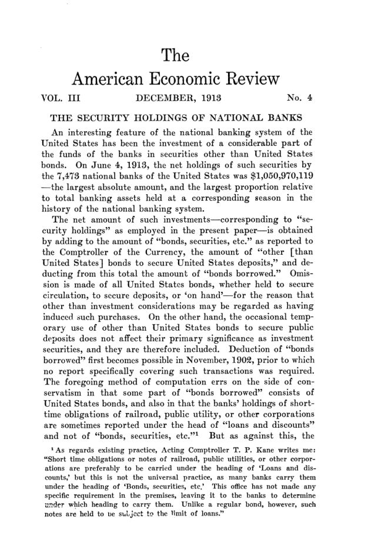

Hollander e a reserva que não se vendia
Leitura: 8 min
Com cinquenta anos de balanços, Jacob H. Hollander testa a ideia de que os títulos dos bancos nacionais eram uma reserva secundária. Nas crises, mostra ele, ninguém os vendia.


Entre 12 de setembro e 18 de outubro de 1873, durante o pânico que culminou nos últimos dez dias de setembro, com a Bolsa de Nova York fechada, os bancos nacionais americanos cortaram empréstimos de US$ 944 milhões para US$ 882 milhões, e os depósitos caíram de US$ 638 milhões para US$ 530 milhões. No mesmo intervalo, a carteira de títulos desses bancos subiu, de US$ 23,7 milhões para US$ 25,4 milhões.
O episódio é um dos testes que Jacob H. Hollander, da Johns Hopkins University, aplica no artigo que abre o número de dezembro de 1913 da American Economic Review. O objeto são os títulos que os bancos nacionais compravam além dos títulos federais: obrigações de estados e municípios, de ferrovias, de empresas de serviços públicos e outras. A pergunta é se essa carteira servia para aquilo que os manuais diziam.
O que os manuais diziam?
A explicação corrente era a da reserva secundária: além do dinheiro em caixa, um banco prudente manteria aplicações seguras, rentáveis e fáceis de vender, para converter em dinheiro quando uma retirada ameaçasse a reserva principal. Hollander cita E. D. Howard e J. F. Johnson, F. A. Cleveland, Horace White e Victor Morawetz nesse sentido. Registra também, numa carta de Frank A. Vanderlip, que a expressão não tinha sentido preciso na lei bancária; no uso do mercado, abrangia títulos, empréstimos de liquidação imediata e tudo o que se pudesse realizar em cerca de 24 horas.
Para medir a carteira, o autor soma os “títulos e valores” informados ao Comptroller of the Currency, o órgão federal de supervisão dos bancos nacionais, aos títulos não federais dados em garantia de depósitos do governo, e desconta os títulos tomados emprestados. Deixa de fora todos os títulos federais, cuja compra podia ter outros motivos, como lastrear a emissão de notas. Reconhece que o método erra para menos, porque parte das notas de curto prazo de empresas era lançada como empréstimo.
O que os balanços mostram?
Se a teoria valesse, a proporção de títulos nos ativos ficaria mais ou menos constante, salvo flutuações sazonais e cíclicas. A tabela de Hollander, ano a ano desde 1863, mostra outra coisa: a proporção subiu quase sem parar. Recuou poucas vezes, e voltou a subir em seguida, até que o valor aplicado ficou praticamente igual ao capital integralizado dos bancos.
O ganho dos títulos não se fez à custa de um item só. Até 1890, compensou a queda dos títulos federais; de 1890 a 1900, a queda da proporção de empréstimos e descontos; depois de 1900, pequenas quedas em títulos federais, dinheiro em espécie e saldos em outros bancos. Entre 1897 e 1907, a década de expansão industrial, a carteira passou de US$ 208,8 milhões para US$ 708,5 milhões, enquanto os empréstimos foram de US$ 2,066 bilhões para US$ 4,678 bilhões.
Os títulos ajudaram nas crises?
Hollander percorre as crises do período e encontra sempre o mesmo padrão. Em 1873, a carteira cresceu durante o pânico. Nas perturbações de 1884 e 1890, quase não se mexeu, enquanto os empréstimos encolhiam. No pânico de 1893, ficou praticamente parada: US$ 150,7 milhões em 4 de maio, US$ 149,6 milhões em 12 de julho, US$ 148,5 milhões em 3 de outubro. A venda de títulos, conclui, não deu alívio algum.
Em 1907, entre 22 de agosto e 3 de dezembro, a carteira aumentou, em valor e em proporção dos ativos. O quadro é turvado pelos US$ 106,1 milhões em títulos que os bancos tomaram emprestados no período, para garantir depósitos do Tesouro. Hollander inverte a leitura: o recurso a empréstimos de títulos nessa escala mostra a rigidez da carteira, porque, se os títulos fossem líquidos, vendê-los teria sido o caminho mais fácil.
“A tensão do pânico não é antecipada nem aliviada pela venda de títulos.” (“Panic strain is neither anticipated nor relieved by the liquidation of securities.”)
Quando os bancos compravam?
A reserva secundária previa compras nos tempos parados, quando sobra dinheiro, e vendas nos tempos ativos. Hollander separa os anos de compra rápida dos de compra lenta e encontra outro desenho. Os anos rápidos foram de grande atividade, como 1891–92, 1898–1901 e 1905, ou de prostração logo depois de um pânico, como 1894 e 1908. Os lentos foram de depressão prolongada ou de ressaca depois da especulação, como 1895–97, 1902–04 e 1909–10.
O resumo do autor é um ciclo. Os bancos compram muito na euforia, com depósitos altos, mercados ativos, lançamentos e sindicatos de subscrição; param quando vem o cansaço que anuncia a crise; não vendem no pânico; voltam a comprar na prostração, em parte por executar garantias, em parte para aplicar reservas inchadas; compram devagar na depressão. O teste sazonal dá resultado parecido: em quarenta anos, de 1873 a 1913, houve 17 sem nenhuma redução da carteira entre uma chamada e outra, e nos 23 restantes as reduções não seguiram estação definida.
Os grupos de bancos seguem a mesma regra. Os bancos do interior foram os compradores mais dispostos: em 4 de setembro de 1912 tinham 11,2% dos ativos em títulos, proporção que nenhum outro grupo igualou, salvo os bancos da cidade de Nova York numa data excepcional, 1º de setembro de 1911, com 11,3%.
O que Hollander propõe?
A conclusão é que os títulos não servem de reserva secundária, nem na sazonalidade nem no ciclo. Hollander dá ao comportamento o nome de teoria da “armadilha de lagosta”: compra-se a preços altos e reluta-se em vender a preços baixos. Os motivos das compras, diz, são o dinheiro parado nas depressões e, nos tempos ativos, a pressão dos novos lançamentos, a participação em sindicatos e as relações com as empresas.
“Teoria da ‘armadilha de lagosta’ da compra habitual a preços altos e da relutância em vender a preços baixos.” (“the ‘lobsterpot’ theory of customary purchase at high price levels and of reluctance to sell”)
Ele considera inconveniente que bancos feitos para o empréstimo comercial imobilizem parte crescente dos recursos em aplicações que a experiência mostrou serem pouco móveis, com menos capacidade de emprestar e desconto mais caro. Reconhece que o mercado precisa de alguém que segure os lançamentos até que os investidores os absorvam, mas acha que bancos comerciais não devem fazer esse papel, porque a demanda por esse serviço coincide com a de crédito comercial.
O remédio tem duas partes: limitar por lei a liberdade dos bancos de comprar títulos e oferecer uma aplicação melhor para o dinheiro parado. Esta viria da legislação monetária então em discussão, que pela primeira vez permitiria o aceite e o redesconto de papel comercial e criaria uma reserva secundária verdadeira. Hollander duvida que o mercado de desconto, sozinho, mude hábitos antigos, e por isso defende as duas medidas juntas.
Na minha leitura
Na minha leitura, o artigo é um exemplo de como testar uma explicação funcional com dados de balanço. A teoria da reserva secundária descreve o que um ativo deveria fazer; Hollander pergunta o que os bancos de fato fizeram com ele nos momentos em que ele seria útil. A resposta separa duas propriedades que os manuais confundiam: um título pode ter mercado em tempos normais e não ser vendido quando todos precisam de dinheiro ao mesmo tempo.
A segunda lição é sobre incentivos. O ciclo de compras que ele descreve não é o de um gestor de liquidez, mas o de um investidor que acompanha os lançamentos e evita realizar perdas. Daí a proposta combinar uma restrição com uma alternativa: um ativo de curto prazo, ligado ao comércio e redescontável, que pudesse cumprir o papel que os títulos não cumpriam.
Glossário
- Reserva secundária
- aplicações rentáveis e fáceis de vender que complementariam o dinheiro em caixa de um banco nas retiradas.
- Comptroller of the Currency
- órgão federal americano que supervisionava os bancos nacionais e recebia seus balanços periódicos.
- Chamada (call)
- data, fixada pelo Comptroller, em que os bancos nacionais tinham de informar seus balanços; eram cinco por ano.
- Redesconto
- operação em que um banco vende a outro, ou a um banco central, um título de crédito que já descontou, obtendo dinheiro antes do vencimento.
- Sindicato de subscrição
- grupo de bancos e casas financeiras que garante a colocação de um lançamento de títulos.
Fontes
- The Security Holdings of National Banks — Jacob H. Hollander (Johns Hopkins University) (pp. 793–814). JSTOR · Internet Archive (PDF)
- Edição completa, com os demais artigos: Nº 127 do Arquivo.
Documento em domínio público (EUA, publicado antes de 1931), via JSTOR Early Journal Content e Internet Archive. Resumo e comentário do autor deste site, sem afiliação com a American Economic Association. Encontrou um erro? Escreva: a correção é publicada no próprio texto, com data.
↑ Nº 127 · A reserva que não se vendia e as objeções ao dólar compensado Patterson e os contratos que o dólar compensado desfaria →